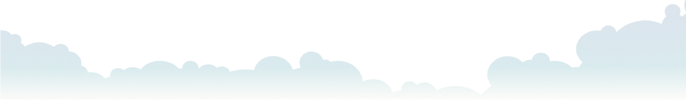

こころにあるもの
そっと灯すデザイン
fuwafuwakokoro
design
こころにあるもの
そっと灯すデザイン
長いあいだ胸の奥にしまっていた
「いつか挑戦したい」という想い
さまざまな理由で踏み出せなかった
その一歩をようやく進めるタイミングが訪れた
でも若いキラキラしたデザイナーさんに頼むのは、少し気後れしてしまう
そんな不安がよぎることもあるかもしれません
でも大丈夫です
同じ年代を生きてきた私だからこそ、丁寧にお話を伺いながら
その想いを、あなたらしい形のデザインとしてそっとお届けします
デザイナー
Tomomi Taniuchi
谷内 朋美 1973.11月生 京都府在住
長く医療事務や企業でのお仕事に携わってきましたが、
愛犬の柴犬を迎えたことが、
私の暮らしに小さな灯りをともしてくれました。
その灯りに背中を押されるように、ずっと心の中にあった
「デザインを学びたい」という想いを少しずつ形にし
今はバックオフィス業務で多方面から企業を支えながら、
そっと寄り添うデザインをお届けする活動をしています。

「こんな相談でも大丈夫かな」という段階でも、お気軽にお問い合わせください。 お客様に安心してご依頼いただけるように、ZOOMにて無料相談（30分）もしております。 無料相談は公式LINEよりお申し込みいただけます。
どのように制作を進めていくのかをひとつひとつ丁寧に説明させていただくので、 何もわからない状態でも大丈夫です。デザインのコンセプトやお客様の想いをしっかり伺います。
内容を基に、料金とスケジュールをご提示いたします。
ラフ・初稿の提案をさせていただきます。
初稿提出後の修正は3回まで。※4回目以降は別途お見積りとなります。 また、初稿ご提出後の大幅なデザイン変更の場合は別途お見積りとなります。
事前にご入金をお願いしております。
ご入金確認後の納品となります。